Documentazione MI-VAL
Non chiedetemela!
Per colpa
di qualche furbo che ha ricevuto materiale a titolo gratuito e non si è fatto
scrupoli a metterlo in vendita non mando più niente a nessuno.
Non faccio eccezioni!
Lo scopo della pagina è di mostrare una parte di quello che dovrebbe essere
stato rilasciato dalla casa.
Con un po' di fortuna si possono trovare i documenti originali ai vari
mercatini.
N.B. Il libretto di
istruzioni 1957 (modelli 125 N, Na, GSa, GSr, 175 L, 200 TV) è stato ristampato
dalla testata "Legend Bike" ed allegato al N. 14 delle rivista.
Diversamente dalle altre ristampe offerte dalla medesima rivista, non è indicato
chiaramente che trattasi di ristampa.
Capita che qualcuno, cosciente o meno, lo venda come originale.
Purtroppo libretto originale e copia sono quasi indistinguibili.
Cataloghi ricambi
|
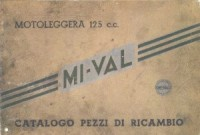 |
Catalogo pezzi di ricambio per modello 125 T |
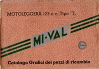 |
Catalogo
Grafici dei pezzi di ricambio per modello 125 T (1951) |
| Listino prezzi
dei pezzi di ricambio per modello 125 T (1951) |
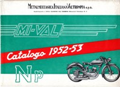 |
Catalogo ricambi per modello 125
Np (1952-53) |
|
|
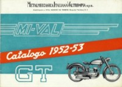 |
Catalogo ricambi per modello 125 GT (1952-53) |
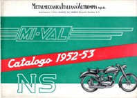 |
Catalogo ricambi per modello 125
NS (1952-53) |
|
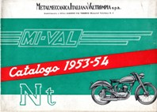 |
Catalogo ricambi per modello 125
Nt (1953-54) |
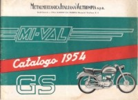 |
Catalogo ricambi per modello 125 GS (1954) |
|
Catalogo ricambi per modello 175 Motofurgone (1954) |
|||
|
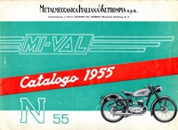 |
Catalogo ricambi per modello 125 N55 (1955) |
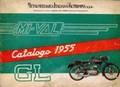 |
Catalogo ricambi per modello 125 GL (1955) |
|
Catalogo ricambi per motocicli (1959) |
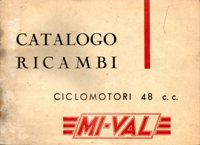
|
Catalogo ricambi per ciclomotori |
Libretti istruzioni per l'uso e la manutenzione
|
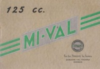 |
Libretto
istruzioni 125 T (1950) Società Industriale Minganti Valtrompia |
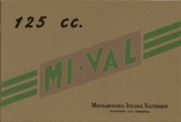 |
Libretto
istruzioni 125 T (1951) |
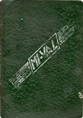 |
Libretto istruzioni (1954) per i modelli: 125 N (Nt
n.d.a) |
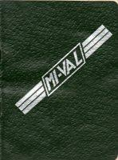 |
Libretto istruzioni (1955) per i modelli: 125 N/55 |
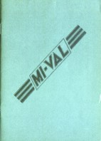 |
Libretto istruzioni (1957) per i modelli: 125 N e Na (1957) |
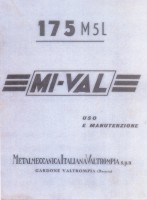 |
Libretto istruzioni per il modello 175 M5L (1957 ??) |
|
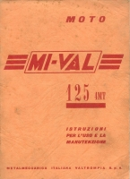 |
Libretto di
istruzioni per il modello 125 4MT (1958) |
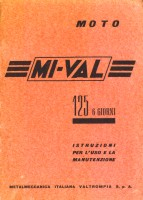 |
Libretto
di istruzioni per il modello 125 "6 GIORNI" (1960) |
|
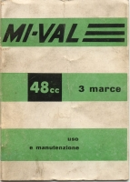 |
Libretto uso e manutenzione 48 3 marce
|
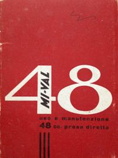 |
Libretto uso e
manutenzione 48 Presa diretta |
|
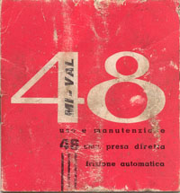 |
Libretto uso e
manutenzione 48 Presa diretta frizione automatica
|